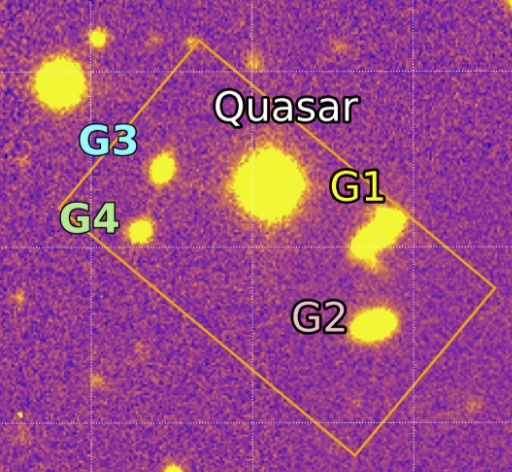
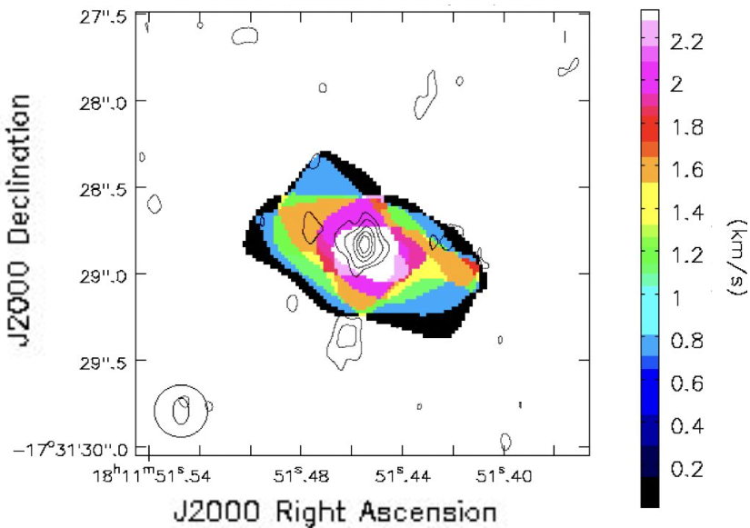

Research Experience
Current Doctoral Research
The Circumgalactic Medium & The Baryon Cycle
The evolution of galaxies is fundamentally driven by the "baryon cycle"—a continuous exchange of gas between a galaxy and its surrounding circumgalactic medium (CGM). My research explores this process in action by combining spatially resolved emission maps (Keck/KCWI) with high-resolution background quasar absorption spectra (VLT/UVES).
By mapping stellar and gas kinematics and applying 3D geometric bicone modeling, I trace accelerating galactic outflows. Ultimately, this work demonstrates how powerful galactic winds transport material, actively enrich the circumgalactic environment, and dictate a galaxy's evolutionary history.

Master's Thesis Project
High-Spectral Resolution Observations of Molecular Lines Detected in a Broadband VLA Survey
As part of the project JOURNEY (Jets and Outflows Revealing the Nature and Evolution of massive YSOs) at WIU Astrolab, I investigated the dynamics of molecular gas associated with jets and outflows in high-mass star-forming regions.
Utilizing data from the Very Large Array (VLA) in New Mexico, I conducted follow-up observations to investigate the nature of CH3OH and NH3 emissions in young high-mass stellar objects and analyze molecular outflow dynamics. This dissertation was completed under the supervision of Dr. Esteban Araya.
